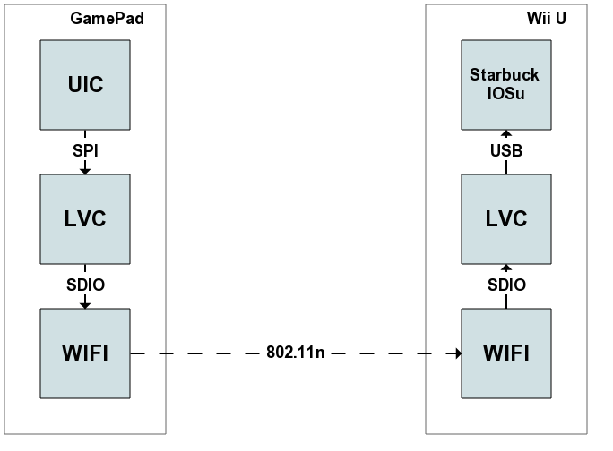

Console Port |
Pad Port |
Direction |
|---|---|---|
50022 |
50122 |
Console → Pad |
The input protocol, also known as HID protocol, is used to send input device status from the GamePads to the Wii U. It is a very simple protocol: a 128 bytes blob contains the status of most input methods supported by the Wii U, and it is sent by each GamePad 180 times per second.
The 128 bytes blob is generated on the UIC and received unmodified by IOSu on the console.
struct InputData {
u16 seq_id; // The first/low byte of the seq_id is initialized with the fw_version
u16 buttons; // see ButtonsMask
u8 power_status; // see PowerStatusMask
u8 battery_charge;
u16 left_stick_x;
u16 left_stick_y;
u16 right_stick_x;
u16 right_stick_y;
u8 audio_volume;
AccelerometerData accelerometer;
GyroscopeData gyro;
MagnetData magnet;
TouchscreenData touchscreen;
ExtraMagnetData extramagnet;
u8 mic_status;
u8 extra_buttons; // see ExtraButtonsMask
u8 irc_status;
char unk0;
u8 unk1;
char unk2[43];
u8 fw_version_neg; // ~fw_version
};
enum ButtonsMask {
SYNC = 0x0001,
HOME = 0x0002,
MINUS = 0x0004,
PLUS = 0x0008,
R = 0x0010,
L = 0x0020,
ZR = 0x0040,
ZL = 0x0080,
DOWN = 0x0100,
UP = 0x0200,
RIGHT = 0x0400,
LEFT = 0x0800,
Y = 0x1000,
X = 0x2000,
B = 0x4000,
A = 0x8000
};
enum PowerStatusMask {
AC_PLUGGED_IN = 0x01,
POWER_BUTTON_PRESSED = 0x02,
HEADPHONES_PLUGGED_IN = 0x20,
CHARGING = 0x40,
POWER_USB = 0x80, // not used on retail
};
struct AccelerometerData {
s16 x_accel;
s16 y_accel;
s16 z_accel;
};
struct GyroscopeData {
s24 roll;
s24 yaw;
s24 pitch;
};
struct MagnetData {
s16 x;
s16 y;
s16 z;
};
struct ExtraMagnetData {
// These bytes are concatenated to the s16 values in MagnetData, so that each
// value is 24bit in total.
s8 x;
s8 y;
s8 z;
};
struct TouchscreenData {
// 10 points are sampled at about the same time - average them to get
// a more accurate reading.
struct {
struct {
u16 pad : 1;
u16 extra : 3; // See the next section.
u16 value : 12;
} coords[2];
} points[10];
};
enum ExtraButtonsMask {
NFC_STATUS_MASK = 0x0F,
TV_MENU = 0x10,
TV = 0x20,
R3 = 0x40,
L3 = 0x80,
};
Each touchscreen coordinate is used to store additional information:
Stored as a 12 bit integer in the extra data of the first two points. It is not yet known how to translate this value to a usable pressure value - currently it is assumed to be a resistance value reading.
One bit from point 3 x and point 4 y is used for the LCD status. The purpose of the other bits is unknown.
16 bit integer stored in the extra data of points 6 to 8 (only one bit of the first coordinate of point 6 is used).
The x data contains the battery level. The y data contains the message LED status and a bit of the LCD status.